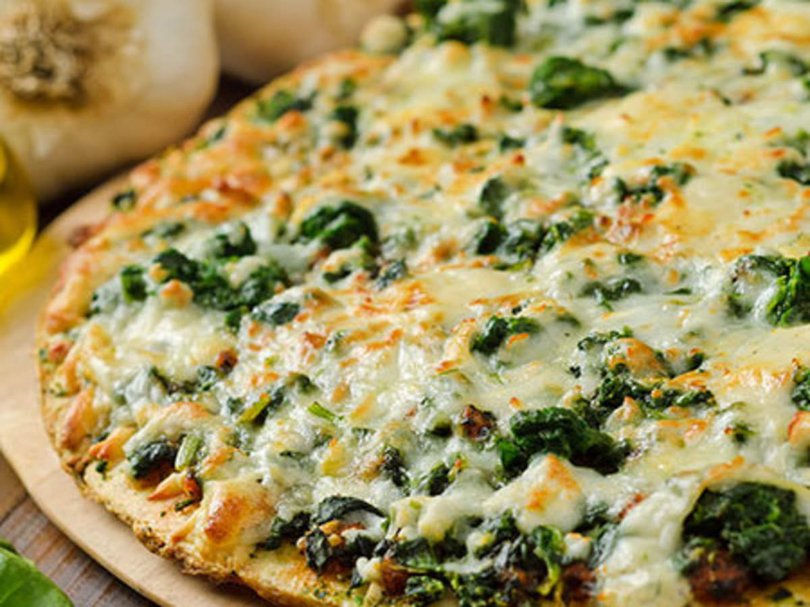

Pizza

Description
An easy and delicious pizza with pre-baked dough!
Ingredients
- Pre-baked dough
- Tomato-sauce
- 3 Tomatoes
- 1 cup of spinach
- Grated Cheese
- Seasonings like salt, pepper, oregano
Steps
- Preheat the oven to 200 degrees celcius.
- Spread the tomato sauce evenly over the pre-baked dough.
- Cut the tomatoes into small pieces and distribute evenly over the dough.
- Season with Salt, Pepper and Oregano.
- Cover with the grated cheese.
- Bake for 5-6 Minutes, put Spinach on the Pizza after around 4 Minutes.